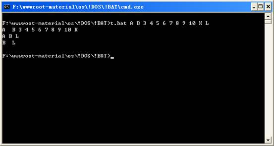

在批处理中适当的引用变量将会使你所编制的程序应用面更广。批处理每次能处理的变量从%0~%9共10个。其中%0默认给批处理的文件名使用。
非在使用SHIFT命令后%0才能被%1所替代。引用shift命令的例子如果把%1前面多加上一个%0那么结果如下：
C:\>SHIFT.BAT 1 2 3 4 5 6 7 8 9 10 11 SHIFT.BAT 1 2 3 4 5 6 7 8 9 1 2 3 4 5 6 7 8 9 10 2 3 4 5 6 7 8 9 10 11
系统是如何区分每个变量的呢，系统区分变量的规则为字符串中间的空格，即只要发现空格就把空格前面的字符当作一个变量而空格后面的字符则作为另一个变量。如果你的变量是一个当中包含空格的长目录名这时候你需要用引号将他圈起来。
例：
ECHO %1 ECHO %2 ECHO %3
输入命令：
C:\>TEST “Program Files” Program Files Program Files Program Files
在一个复杂的批处理中又可能同时使用的变量会超过10。个这时候会和系统的规则想冲突那么这个问题怎么解决呢？
在系统中还有一种变量称之为环境变量（使用SET命令可以查看当前系统的环境变量）。
如当前系统目录是%windir%或%SystemRoot%等。
当同时使用的参数超过10个的时候，我们可以把某些在后面的程序中还要调用的变量保存为环境变量。
具体用法如 SET A=%1 ，这样我们就命名了一个新的环境变量A 。
在调用变量A的时候要%A%这样调用，环境变量不受SHIFT命令影响。
如果要改变一个环境变量需要重新对其设置才能改变。当然也可以进行变量与变量之间的传递来达到目的。
下面我们来看一个例子，批处理如下：
ECHO OFF SET PASS=%1 SHIFT SET PASS1=%1 SHIFT ECHO %PASS% %PASS1% %1 %2 %3 %4 %5 %6 %7 %8 %9 SHIFT ECHO %PASS% %PASS1% %9 SET PASS=%PASS1% /*变量的传递 SET PASS1=%9 SHIFT ECHO %PASS% %PASS1% %9

A B 3 4 5 6 7 8 9 10 K
注意：这一行显示了11个变量
A B L 在使用了3次SHIFT之后%9变成了L
B L 变量的传递后的结果